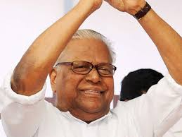

വി എസ് അച്യുതാനന്ദൻ ഭരണ പരിഷ്കാര കമ്മീഷന് അധ്യക്ഷ സ്ഥാനം രാജിവെച്ചു
വി എസ് അച്യുതാനന്ദൻ ഭരണ പരിഷ്കാര കമ്മീഷന് അധ്യക്ഷ സ്ഥാനം രാജിവെച്ചു
അനാരോഗ്യം കാരണമാണ് രാജി. മുഖ്യമന്ത്രി പിണറായി വിജയന് രാജിക്കത്ത് കൈമാറി.
വി എസ് അച്യുതാനന്ദൻ ഭരണ പരിഷ്കാര കമ്മീഷന് അധ്യക്ഷ സ്ഥാനം രാജിവെച്ചുവി എസ് അച്യുതാനന്ദൻ
JANUARY 30, 2021, 3:25 PM IST
തിരുവനന്തപുരം: മുതിർന്ന സി പി എം നേതാവും മുൻ മുഖ്യമന്ത്രിയുമായ വി എസ് അച്യുതാനന്ദന് ഭരണ പരിഷ്കാര കമ്മീഷന് അധ്യക്ഷ സ്ഥാനം രാജിവെച്ചു. അനാരോഗ്യത്തെ തുടർന്നാണ് രാജി. മുഖ്യമന്ത്രി പിണറായി വിജയന് അദ്ദേഹം രാജിക്കത്ത് കൈമാറി. നാല് വര്ഷവും അഞ്ച് മാസവുമാണ് വി എസ് ഭരണ പരിഷ്കാര അധ്യക്ഷ സ്ഥാനത്തുണ്ടായിരുന്നത്. ഏകദേശം 11 റിപ്പോര്ട്ടുകള് ഇതിനകം സര്ക്കാരിന് സമര്പ്പിച്ചു. രണ്ട് റിപ്പോര്ട്ടുകള് തയാറായിട്ടുണ്ട്. അതും ഉടന് സമര്പ്പിക്കും.
ഭരണ പരിഷ്കാര കമ്മീഷൻ അധ്യക്ഷ സ്ഥാനത്ത് തുടരാന് താത്പര്യമില്ലെന്ന് സര്ക്കാരിനെയും പാര്ട്ടിയേയും മുഖ്യമന്ത്രിയെയും അദ്ദേഹം നേരത്തെ അറിയിച്ചിരുന്നു. രാജി വെക്കുന്നതിന് മുന്നോടിയായി ഒരു മാസം മുമ്പ് ഔദ്യോഗിക വസതിയില് നിന്ന് ഒഴിഞ്ഞ് മകന്റെ വീട്ടിലേക്ക് താമസം മാറിയിരുന്നു. ഒട്ടനവധി ശുപാര്ശകള് ഈ നാല് വര്ഷം കൊണ്ട് വിഎസ് അധ്യക്ഷനായ സമിതി സര്ക്കാരിന് സമര്പ്പിച്ചിട്ടുണ്ട്. അഴിമതിക്കെതിരായ വിജിലന്സിന്റെ പരിഷ്കാരം സംബന്ധിച്ച റിപ്പോര്ട്ടുകള്, സിവില് സർവീസ് പരിഷ്കരണം, ഇ- ഗവേണനന്സുമായി ബന്ധപ്പെട്ട ശുപാര്ശകള് എന്നിവയായിരുന്നു ഇതിൽ പ്രധാനം.
വി എസ് അച്യുതാനന്ദന്റെ വാർത്താകുറിപ്പ്
ഭരണപരിഷ്കാര കമ്മീഷന് അദ്ധ്യക്ഷന് എന്ന നിലയില് നാലര വര്ഷമായി പ്രവര്ത്തിക്കുകയും പതിനൊന്ന് പഠന റിപ്പോര്ട്ടുകള് സര്ക്കാരിന് സമര്പ്പിക്കുകയും ചെയ്തുകഴിഞ്ഞു. ഇതിനു വേണ്ടി സംസ്ഥാനത്തുടനീളം സഞ്ചരിക്കുകയും ജനങ്ങളുമായി സംവദിക്കുകയും ചെയ്തു. നിരവധി സെമിനാറുകളും യോഗങ്ങളും നടത്തി. ഇത്തരം യോഗങ്ങളിലൂടെ ക്രോഡീകരിച്ച അഭിപ്രായ നിര്ദ്ദേശങ്ങള് ശാസ്ത്രീയമായ പഠനങ്ങള്ക്ക് വിധേയമാക്കിയപ്പോഴാണ് റിപ്പോര്ട്ടുകള് രൂപപ്പെട്ടത്. രണ്ട് റിപ്പോര്ട്ടുകള്കൂടി തയ്യാറാക്കിയിട്ടുണ്ട്. അതിന്റെ പ്രിന്റിങ്ങ് ജോലികള് തീരുന്ന മുറയ്ക്ക് അതും സര്ക്കാരിന് സമര്പ്പിക്കാനാവും.
എന്നാല്, ആരോഗ്യപരമായ കാരണങ്ങളാല് അദ്ധ്യക്ഷന് എന്ന നിലയില് എനിക്ക് തുടരാനാവാതെ വന്നിരിക്കുന്നു. തലച്ചോറിലുണ്ടായ രക്തപ്രവാഹത്തെത്തുടര്ന്ന് ഡോക്ടര്മാരുടെ കര്ശന നിബന്ധനകള്ക്ക് വിധേയമായി തുടരുന്നതിനാല്, യോഗങ്ങള് നടത്താനോ, ചര്ച്ചകള് സംഘടിപ്പിക്കാനോ കഴിയുന്നില്ല. ഈ സാഹചര്യത്തില്, 31-01-2021 തിയ്യതി വെച്ച് ഭരണപരിഷ്കാര കമ്മീഷന് അദ്ധ്യക്ഷ സ്ഥാനം രാജിവെക്കുന്നതായി ഞാന് സര്ക്കാരിനെ അറിയിച്ചിട്ടുണ്ട്.
നൂറു കണക്കിന് ആളുകളുടെ കൂട്ടായ യത്നത്തിന്റെ ഫലമായാണ് കമ്മീഷന്റെ പഠന റിപ്പോര്ട്ടുകളുണ്ടായത്. ഈ യജ്ഞത്തില് സഹകരിച്ച എല്ലാവരോടും അകൈതവമായ കൃതജ്ഞത അറിയിക്കുന്നു. സര്ക്കാരിന് സമര്പ്പിച്ചിട്ടുള്ള റിപ്പോര്ട്ടുകളില് കൈക്കൊള്ളുന്ന തുടര് നടപടികളാണ് കമ്മീഷന് ചെലവഴിച്ച തുകയുടെ മൂല്യം നിശ്ചയിക്കുക. അതുണ്ടാവും എന്നാണ് ഞാന് പ്രതീക്ഷിക്കുന്നത്.
Back to Home